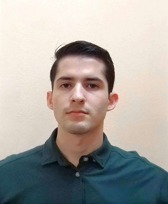

Christopher Camacho | WDD 130

Hello! My name is Christopher Camacho and I am from Cartago, Costa Rica. I enjoy playing video games.

Hello! My name is Christopher Camacho and I am from Cartago, Costa Rica. I enjoy playing video games.